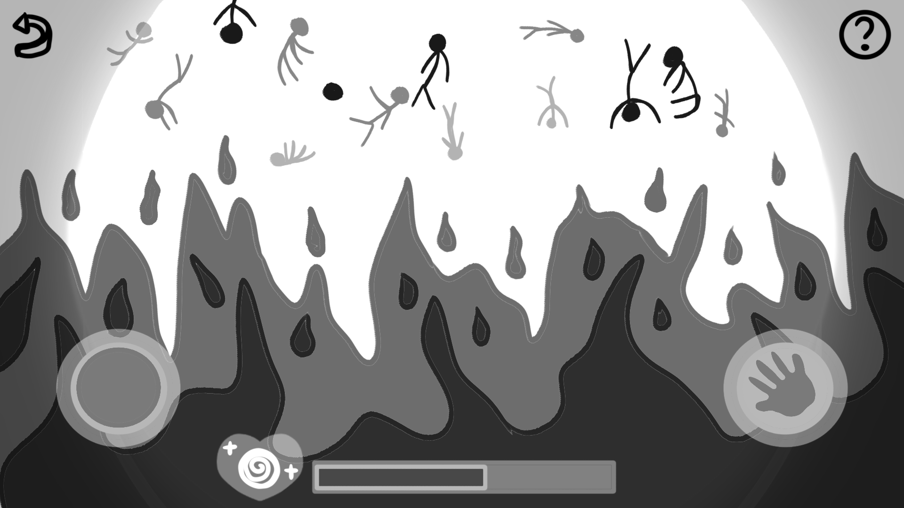
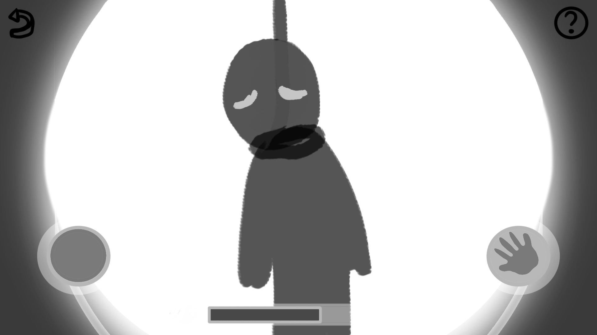
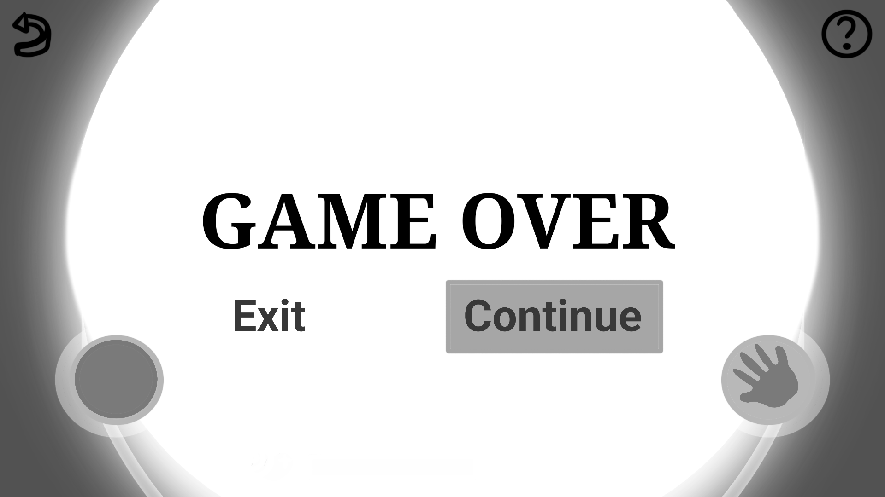

Eye Wonder is a horror, psychological, mystery and fictional escape game that involves the life of a soul in Hell. A latest game developed by Sadist Doll Company.
After falling into a coma due to suicide, the main character proceeds to an adventure. With the help of "Eye Wander", the character will experience and see the kinds of punishments and tortures in Hell. You need to find and collect "orb of lights" in order to recover health bar if you failed a puzzle. Solve the hidden puzzles, use the items well and finish the game by obtaining the "Soul Particle" that will help you to gain consciousness in real world.
The player will be going in an adventure wherein he will collect the “orb of lights” together with “Eye Wander”. The game is consisting of episodes where he needs to escape the hell, the player will be fighting demons in the game.
The software does not require a high-end device, anyone can play it anywhere. It is available on windows, macOS, linux, and android. It is playable on older version of the OS stated or on the newer versions. It is the first version of the game.
| test | test |
|---|---|
| Application size | 149 MB |
| Supported OS | windows, macOS, linux, and android |
| Required RAM | 4 GB |
| Required Graphics Card | 500 MB |
| Version | 1.0 |
The design of the user interface is just like other game or horror game, with a horror theme but also a simple design. The interface will have the common user interface such as the main menu, options or setting, and the gameplay.
Yes. No.
Yes
| CPU | Intel celeron, amd, or higher |
| RAM | 4 GB or higher |
| ROM | 300 MB or higher |
| Peripherals | Keyboard, Mouse |
| OS | Wnodws 7 or higher |
First, we need to start new game, we can do this by navigating on the main menu and then clicking on the start button.
You can adjust the volume or other game control in the option tab, you can also navigate in the main menu to access the option tab or access it midst gameplay.
The player will collect the “orb of lights” from the game.
 This is the where the game/episode ends, you can create another one or continue to another episode by simply clicking Continue.
